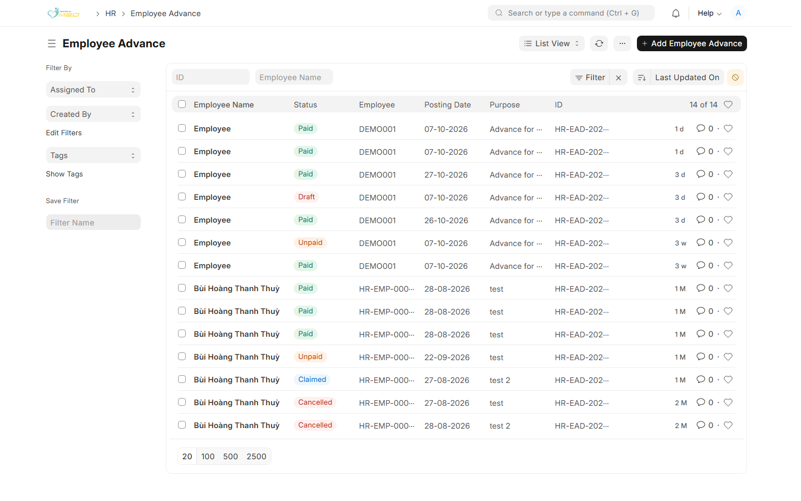
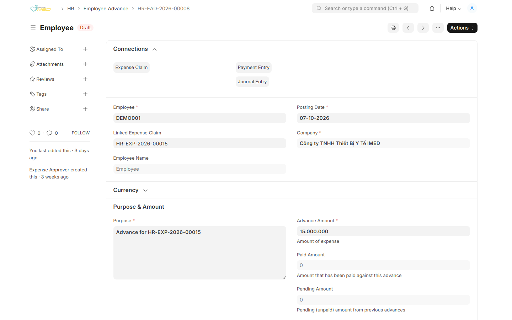
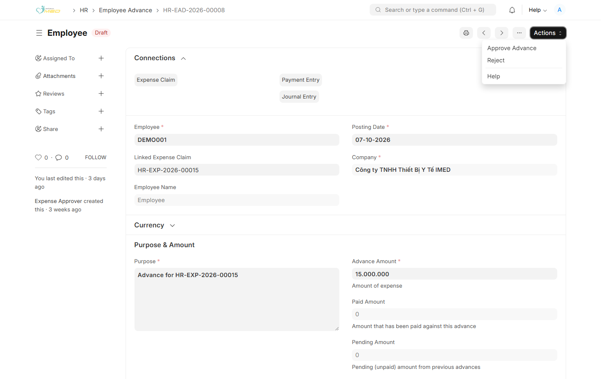

Khi nào làm
Nhân viên chọn Yêu cầu tạm ứng và người duyệt đã Approve Plan. Hệ thống tạo Employee Advance (Đề nghị tạm ứng) và đề nghị thanh toán đứng ở bước chờ Kiểm Toán chi đề nghị tạm ứng.
Chi phần còn lại sau khi Kiểm Soát Trưởng duyệt là việc khác: chi sau khi duyệt.
Mở Đề nghị tạm ứng
Bước 1: Mở danh sách
Vào HR → Employee Advance (Đề nghị tạm ứng). Mở phiếu Draft đang chờ bạn. Phiếu đã chi có trạng thái Paid.

Bước 2: Kiểm tra số tiền
Trên form, kiểm tra:
- Linked Expense Claim — đề nghị thanh toán gốc
- Purpose và Advance Amount
- Paid Amount — còn 0 thì chưa chi

Chi và duyệt đề nghị tạm ứng
Bước 3: Tạo Payment Entry
Tạo Payment Entry kiểu Pay, đối tượng Employee, số tiền bằng Advance Amount, và tham chiếu đúng Employee Advance (Đề nghị tạm ứng) này. Điền Mode of Payment và tài khoản ngân hàng, rồi nhấn Submit.
Chưa có chứng từ chi đã nộp thì chưa đánh dấu đề nghị tạm ứng đã trả.
Bước 4: Approve Advance
Quay lại Employee Advance. Mở Actions → Approve Advance. Paid Amount cập nhật theo chứng từ chi. Reject trả đề nghị tạm ứng khi chưa chi.

Đánh dấu trên đề nghị thanh toán
Mở Expense Claim (Đề nghị thanh toán) liên kết. Khi bước chờ đề nghị tạm ứng đang sáng, mở Actions → Advance Paid. Hệ thống kiểm tra đề nghị tạm ứng đã có số đã chi. Sau đó nhân viên được nhập chi tiết chi phí thực tế.